The Artist's Dedication
The artist exists in order to be dedicated to eternity.
Author: Roman Usachev. Translated from Russian.
In my view there are only three themes worth creating works of art about: the theme of God, of knowing God; the theme of love, of relationships between people; and the relationship to one's homeland, the awareness of one's succession, of where one comes from.
In Scripture there is such a concept as the Kingdom of God. The Kingdom of God is something elusive. Or one could put it another way: the Kingdom of God is a certain atmosphere; as it is written: "For the kingdom of God is not meat and drink; but righteousness, and peace, and joy in the Holy Ghost" (Rom. 14:17).

Often verbal means are not enough to tell of the Kingdom of God, to awaken a thirst for it, so that it touches hearts, so that the Kingdom of God reaches people. You can try to tell about the Kingdom of God, but art, it seems to me, has such potential that it can convey the very atmosphere of the Kingdom of God. It is no accident that it is music that is used for worship. Or painting, for example, can open something inside a person, can have an effect on the soul that is very hard to describe in words. So too poetry, fine literature and so on. That is, all of this can create a certain state.
M. K. Čiurlionis. Fugue in C minor, VL 219
Any art should create some transcendent experience beyond the ordinary. To create it, one has to take part in that experience. For example, the way icons were made. It is believed that people painted in icons what they themselves contemplated, what they themselves saw in communion with God. (Editor's note: this, in all probability, is how the first Israelite artist, Bezalel, worked.) If you yourself have not taken part in this transcendent experience, your art will be too rational. In my view, art should give birth to a state of inner wonder, a kind of opening up; a person should live through a transcendent experience, go beyond the bounds of his reality, out of what is in his mind, in his household, in his everyday life.
Artists today act in different ways: there is such a thing as "art for art's sake"; there are people who get a kick out of the process itself. The question arises: to what is such an artist dedicated?
Even an actor who lays his life on the altar of art and dreams of dying on stage is always looking for a super-objective. If there is no one in the hall, I am not sure he will want to die on stage. His wish is rather not to die on stage but to produce something in the viewer's heart by his art. For that he needs a viewer. If he does not need that, if there is no dialogue, if it is not a means of communication, then what is it for? Then we are dealing with a psychopath, that is, something is wrong with the person. Though that happens too.
It happens that an artist is dedicated to the process itself. He simply admires the paints, the way oil lies on the canvas, or something like that. Probably that happens, I don't know. Still, every person of art must have a super-objective. He does not simply want to die on stage; he wants that death to be reflected somehow in people's hearts. He does not simply want to admire for himself how he has matched a combination of colours; he strives for it to give birth to something in a person's soul.
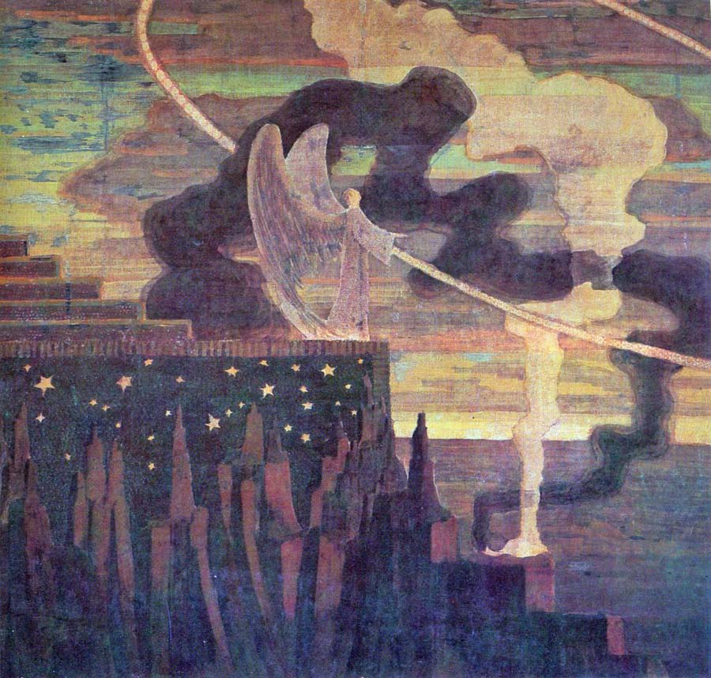
A dedicated artist is first of all dedicated to the Creator.
Why is there no contradiction for me between a dedicated artist and the fact that the Lord God must be the main thing in his life? Because to be a dedicated artist means, in a certain sense, to be dedicated to the Kingdom of God, or else to some other experience beyond the ordinary: then an evil, negative one.
I like literature, painting; I like music that communicates to me a certain experience beyond the ordinary. Of course art varies. It can be cold and very speculative. Or it can be the artist's open self-admiration. It can be a search for pure form. But what gets to me personally, what touches me, is precisely the art that gives a glimpse beyond this world, that opens to me the higher, heavenly world, this light, "the Sun of righteousness" (Mal. 4:2), which is in God.
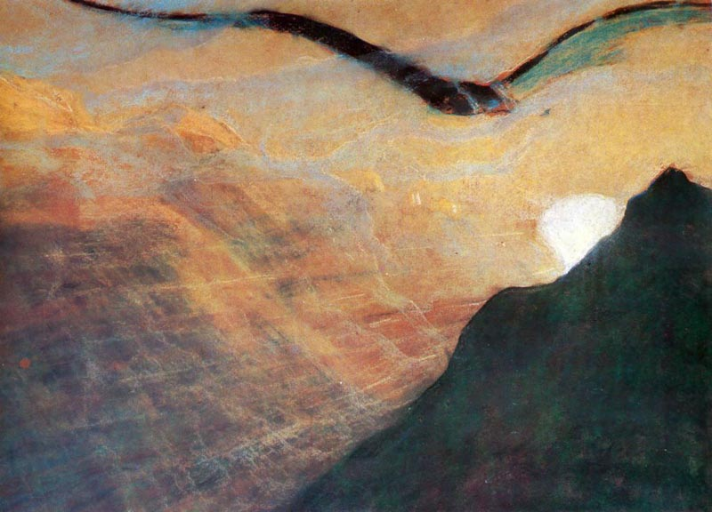
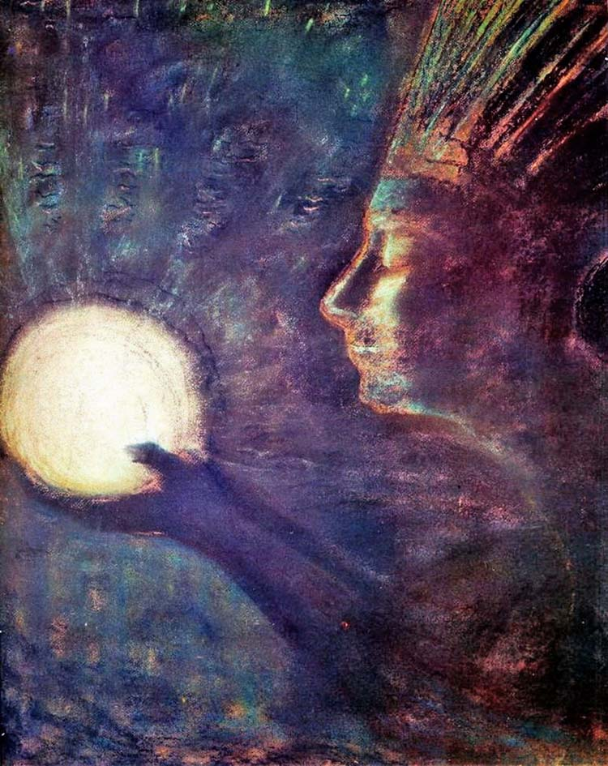
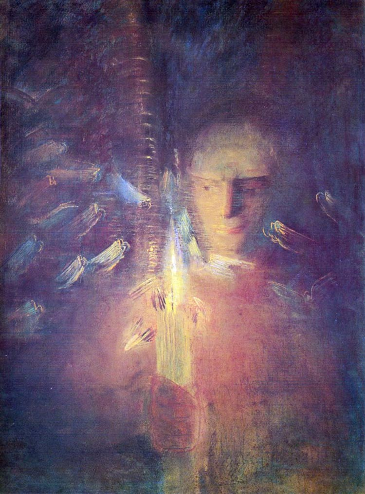
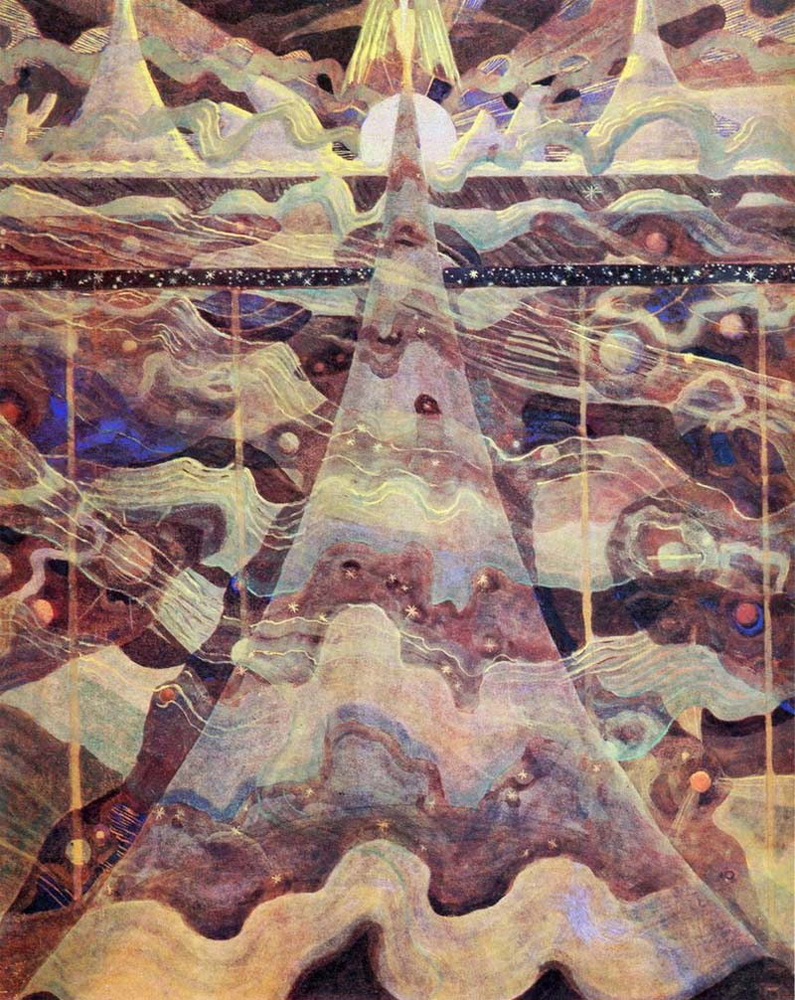
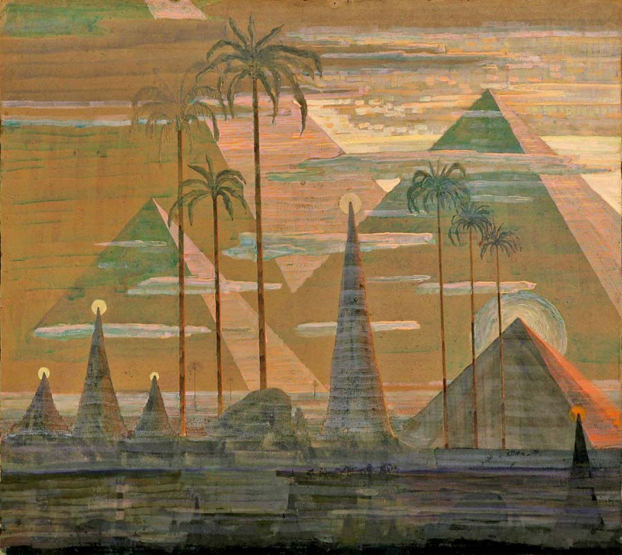
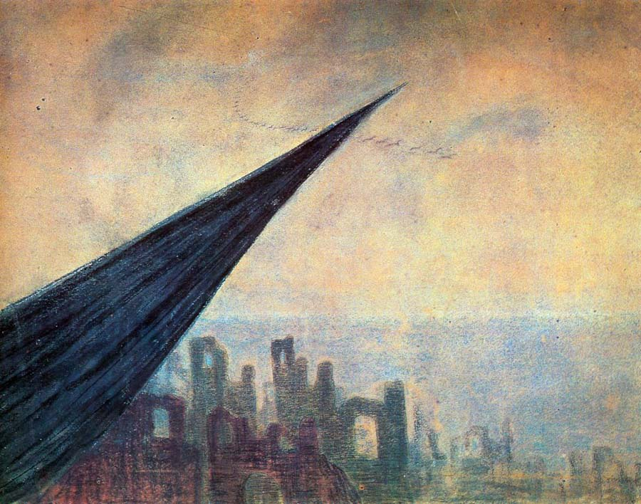
Probably some artists dedicate themselves to the process. But it seems to me that true art is not dedication to the process but dedication to where the process leads.
I am drawn by this light, the light of eternity, of the future, of what does not yet exist, of the coming world of love where the Lord reigns over all. This light is reflected through things in this world. We can see its gleams in how a mother treats her child, how two people in love treat each other; we can see it through the nature created by God and in much else. And we can see all this directly in life, when love for another person, compassion and mercy suddenly open up for us. But there are some people who have a special gift; that is, it is not their merit, not their special quality; it really is a gift given from above. They have the ability to see this more than others, and they have the means of art to show it, to open it to others through cinema, painting, music, literature. A person may, for example, write fairy tales or paint pictures, and another, contemplating them with an open heart, will suddenly see this coming light.
And in essence, consciously or unconsciously, the artist exists precisely in order to be dedicated to this eternity, this future. If he is simply trying to immortalise himself, simply to earn money, if he is simply trying to admire himself and his abilities, then I do not know what he is dedicated to. Is it worth dedicating oneself to that?
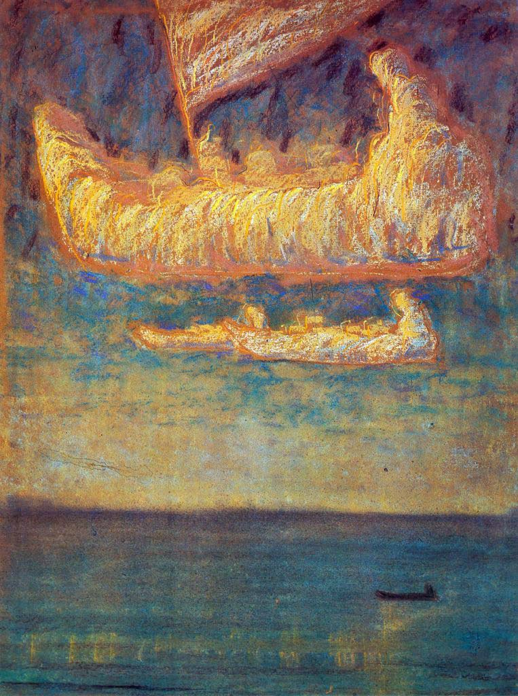
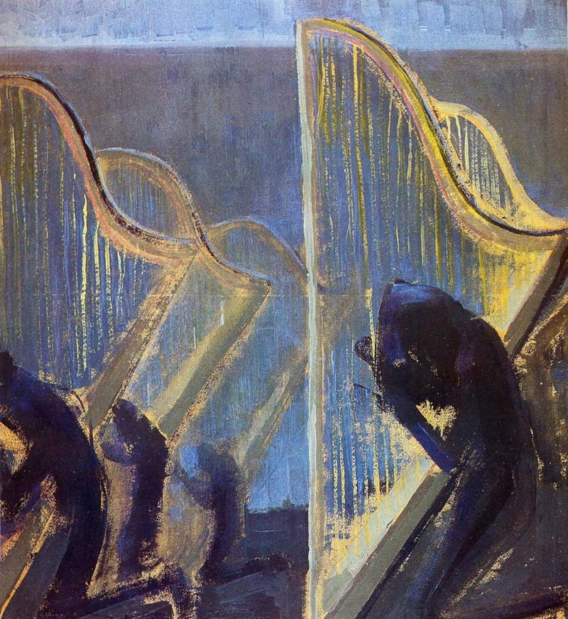
The calling of the artist, in my view, is that he should see something, and that a desire should burn in him for everyone to see it. He sees what stands behind the ordinary in this world. And it matters to him that everyone should see it, that these hidden, secret connections should be revealed, that people should see this light that is inside, still closed off by the everyday. And suddenly a person's eyes are opened; he begins to see it. That is the artist's gift. He is dedicated to something that is to happen in another person. And in this sense it is a sacrament.
There are, for example, attempts to reflect this reality one way or another, and the question arises: what for? But there are other attempts: to show something on seeing which a person will himself transform this reality; that is, he will change and become different.
For example, people read the tales of C. S. Lewis. And they meet a completely different world that does not exist around them. But it is exactly this that draws them; it gives them some experience beyond the ordinary.
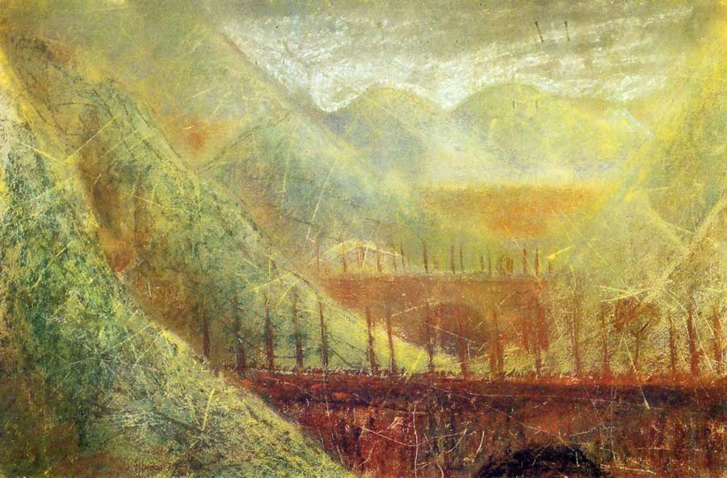
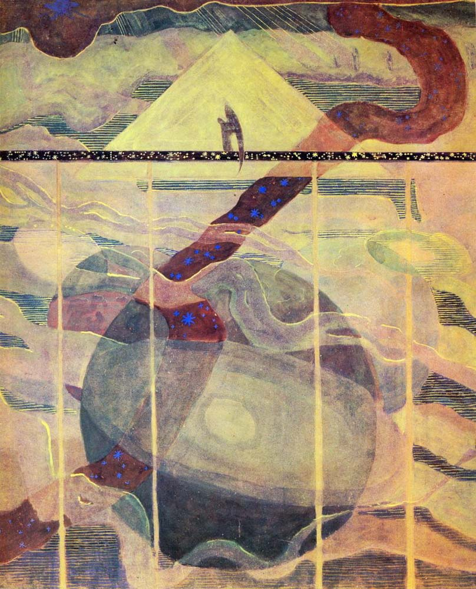
One can sing about how bad, dirty and terrible everything is, and have that kind of social pathos. But in reality it changes no one. Perhaps it will provoke a reaction like: "Oh, what an honest man, he tells it straight, says it like it is." It is something quite different when a person suddenly notices, shows or says something that makes another person's soul become different, transformed.
Often images are the best means of conveying the Kingdom of God. There is a difference between simply saying "Love" and trying to describe it, and feeling it, feeling that we really are loved. A person says to you, "I love you", or a person really loves you and perhaps says nothing at all. Art gives a kind of touch of this.
An artist either has the gift or does not. There is no point trying to be an artist; one should not strive for it; one should not try to be a poet. As they say: "If you can not write, don't write." It must be given from above. It is a choosing. I am talking about when you really cannot help doing it. You are called to it. A person is chosen for it; it is given to him.
If we speak of the artist's dedication in the sense that a person understands that he is a particular instrument in God's hands for bringing something across, then I understand what he is dedicated to. But if his life is not whole, if he himself is disjointed, lost, torn to pieces, and he simply has this gift that shows itself, I would not call that dedication; I would call it being seized by something, being possessed. Yes, a person may be possessed by certain things. But then it is no longer the person himself; it is not he who lives, but someone lives him, someone lives through him.
Wholeness in a person comes only from God; it comes from above, and in himself a person does not have this wholeness. If a person discovers something greater than his own life, greater than what is in this reality, he becomes whole. And then this gift bears fruit.
One must distinguish between dedication and dedication. To be dedicated to the process, to one's own gift, is a snake biting its own tail. It is another matter when there is something into which the gift is built, towards which it strives.
The artist exists in order to be dedicated to eternity.
Watch the video of the conversation with Roman on this subject:
 Called to Be Refined. Bezalel
Called to Be Refined. Bezalel Prospects for Israeli Fashion
Prospects for Israeli Fashion Doing Good. Clothing Designer Lesya Repetivskaya
Doing Good. Clothing Designer Lesya Repetivskaya